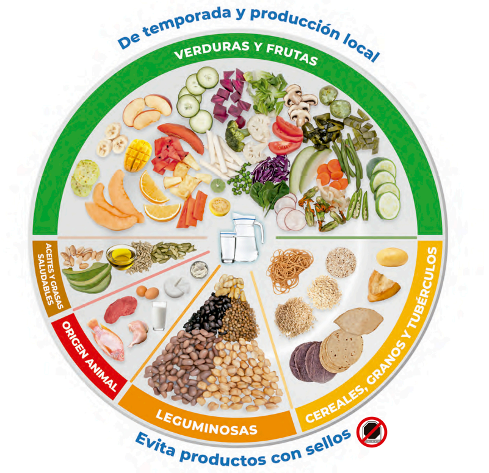
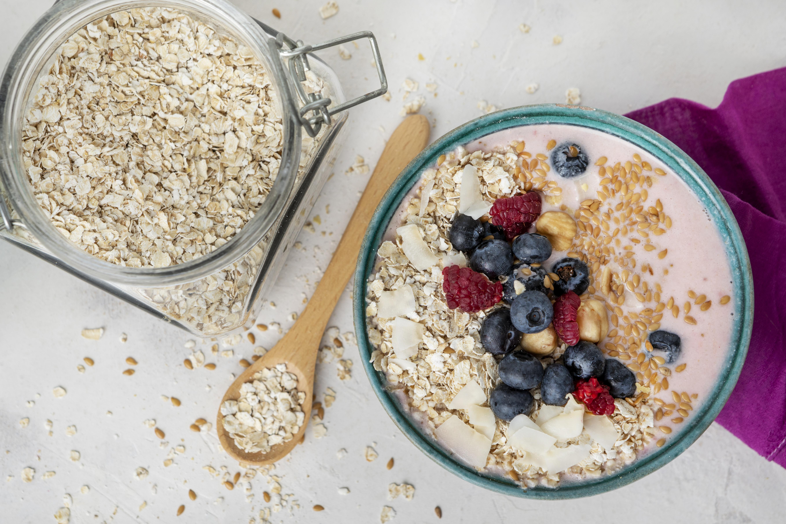
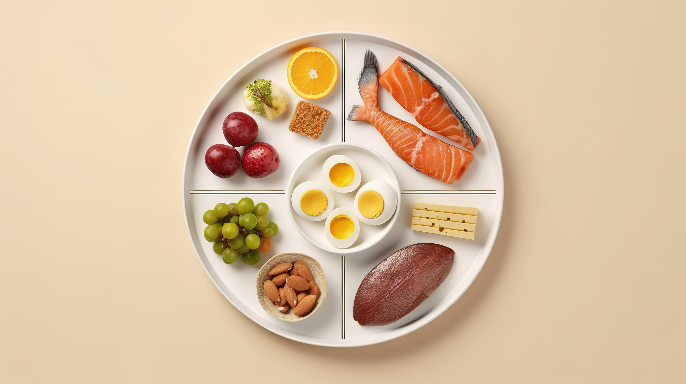

¿Cuál es la mejor dieta para taekwondo?
Debe incluir muchos carbohidratos sin procesar, así como una mezcla de frutas y verduras con mucha proteína.
"Los atletas necesitan más carbohidratos en su dieta, son una fuente rápida de energía y proteína para la recuperación muscular."
Alimentos clave para taekwondistas

